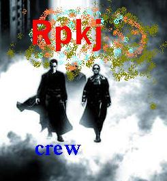

Naaahhh... ???
H a c k 3 D

Admin please patch your server and change to a better OS.
I didn't do anything on your system but just think what would happen if the real geek hack into your system
Greets to -
login1 (i'm around the corner), Joe Angels, arie`, farking (http://www.farking.f2s.com) ,roots, biolator, attrition.org, all ircer DALnet, Webnet, Undernet of #UM, #unixos, #mylinux, #rpkj
Special Greets to -
MyCERT, MIMOS
Defaced by -
blueskrinz adm@mylinux.org
login1 login1@u.dal.net